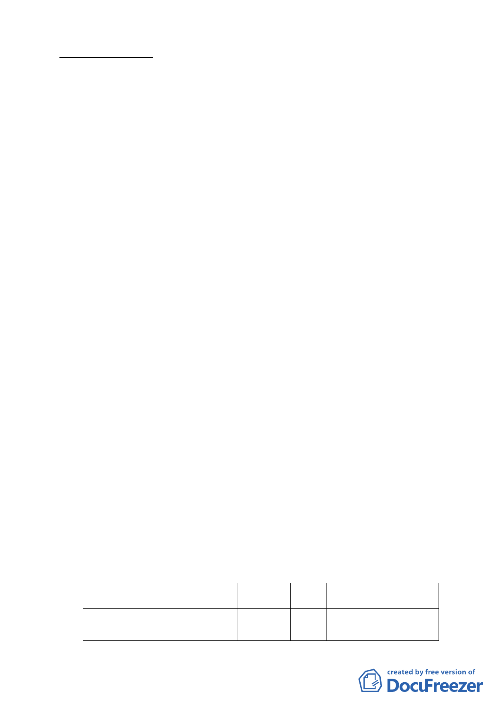

案情概要說明：
一、 計畫範圍：
本變更範圍位於松山機場用地北側及西側，包括部分機
場邊緣特定專用區、農業區、污水處理場用地、道路用地，
面積總計約4.18公頃。
二、 計畫緣起與目的：
松山機場係提供國內、國際與兩岸航空運輸服務。為打
造「東北亞黃金航圈」開啟松山－虹橋、松山－羽田對飛航
線，以及因應兩岸直航之需求，實有必要建立服務與安全措
施完善之機場。
交通部民用航空局為提升松山機場飛航服務安全及符
合ICAO Annex14(國際民航公約第十四附約）規定，並致力維
護國際飛航體系安全，依規定檢討設置跑道地帶、跑道端安
全區、進場燈區。研提「松山機場北側都市計畫劃定為機場
用地取得計畫」中程個案計畫一案，經行政院96年3月28日院
臺交字第0960012190號函核准：「照本院經濟建設委員會意
見 辦 理 」 。 即 行 政 院 經 濟 建 設 委 員 會 96 年 3 月 16 日 都 字 第
0960001192號函意見如下：「為確保飛安，符合ICAOAnnex14
及我國『民用機場設計暨運作規劃』規定，且經評估無法以
禁、限建方式辦理；以區段徵收或市地重劃取得機場所需土
地，在財務上亦不具可行性，因此，原則同意交通部所報計
畫」。並經內政部101年4月3日內授營都字第1010148142 號
函同意准依都市計畫法第27條第1項第3款辦理都市計畫變
更。
三、 變更主要計畫內容：
變更位置
原計畫
1
機場西側，共1
處。
機場邊緣特
定專用區
新計畫
機場用地
面積
（ha）
變更理由
0.09
交通部民用航空局鑑於松
山機場跑道地帶寬度不
-3-